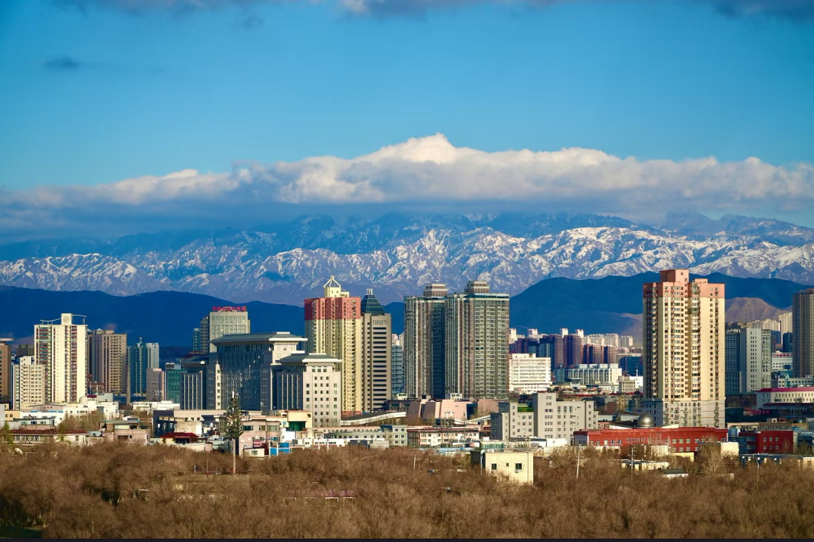

地区简介

乌鲁木齐市（维吾尔语：ئۈرۈمچى شەھىرى，英文名：Urumqi），通称乌市，旧称迪化，乌鲁木齐市位于中国西北、新疆中部、亚欧大陆腹地。地处东经86°37'33"—88°58'24"、北纬42°45'32"—44°08'00"之间。下辖7个市辖区、1个县，总面积1.38万平方千米，2023年年末，全市常住人口408.48万人。语言有普通话、维吾尔语、哈萨克语等。[查看详情]
详细介绍
- 名称演变乌鲁木齐的称谓早在公元925年和田塞语《使河西记》中已有记载...
- 历史沿革新石器时期，就有人类在这里繁衍生息...
- 自然地理乌鲁木齐市位于中国西北、新疆中部地区、亚欧大陆腹地...
- 自然资源水资源是地处内陆干旱区的乌鲁木齐市最宝贵的资源...
- 行政区划截至2024年4月，乌鲁木齐市下辖7个市辖区，1个县...
- 政治中国共产党乌鲁木齐市委员会书记张柱...
- 人口2023年末全市常住人口408.48万人。常住人口城镇化率96.56%...
- 经济乌鲁木齐市围绕自治区“九大产业集群”，即油气生产加工...
- 社会事业2023年末，乌鲁木齐共有普通高等学校23所...
- 交通运输乌鲁木齐在公路、铁路、民航等立体交通建设方面构建起了承东启西...
- 人文乌鲁木齐有汉族、维吾尔族、回族、哈萨克族等多个民族生活在此...